Results and Discussion
Structural Properties
The structural properties of C-MNS and AC-MNS were examined by XRD and Raman spectroscopy, as presented in Figure a,b, respectively. The XRD pattern of C-MNS showed a broad diffraction peak centered at ∼23° and a weaker hump at ∼43°, corresponding to the (002) and (100)/(101) carbon planes, respectively, indicating amorphous carbon with a low degree of graphitization. When the AC-MNS samples were activated using KOH, the (002) diffraction peak progressively broadened and weakened with increasing KOH content, indicating a gradual decrease in graphitic order and the formation of increasingly disordered carbon structures because potassium intercalation and etching disrupted interlayer stacking. Additionally, in the low-angle region, the scattering intensity noticeably increased for AC-MNS-2 and AC-MNS-3, suggesting enhanced development of microporous structure. The absence of sharp crystalline peaks in the XRD patterns implies the high purity of all the samples and the effective removal of residual activating agents and impurities during washing.
(a) XRD patterns and (b) Raman spectra of C-MNS, AC-MNS-1, AC-MNS-2, and AC-MNS-3.
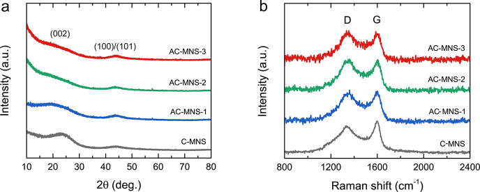
The Raman spectra of C-MNS and AC-MNS revealed two distinct peaks at 1350 cm–1 and 1595 cm–1, corresponding to the D and G bands, respectively. The G band arises from the E2g vibration mode of sp2-hybridized carbon atoms, representing the graphitic domains. In contrast, the D band is associated with structural defects and disordered carbon. The overlap between the D and G bands further supports the amorphous structure of these carbon materials. The calculated D-to-G band intensity ratios (I D/I G) for C-MNS, AC-MNS-1, AC-MNS-2, and AC-MNS-3 were 0.85, 0.92, 0.98, and 1.02, respectively. This increasing I D/I G ratio with increasing KOH content indicates increased structural disorder and reduced graphitization within the carbon lattice because the extensive development of micropores and mesopores during activation exposes a greater fraction of the amorphous carbon edge, which agrees with the XRD patterns.
Morphology and Microstructure
The surface morphology of the C-MNS and AC-MNS samples was investigated by scanning electron microscopy (SEM), as shown in Figure a–d. C-MNS exhibited a relatively flat and compact surface with minimal porosity, which is characteristic of nonactivated biomass-derived carbon. By contrast, KOH activation induced substantial morphological transformation. The AC-MNS surface was rough, and pores began to develop. Moreover, the surface was textured, and a sponge-like, interconnected porous network developed. This morphological evolution indicates effective chemical etching by KOH activation. However, finer features such as micro- and mesopores could not be directly observed because of the resolution limits of SEM.
SEM images of (a) C-MNS, (b) AC-MNS-1, (c) AC-MNS-2, and (d) AC-MNS-3. (e–g) low- and high-magnification TEM images of AC-MNS-3, and (h) the corresponding SAED pattern.
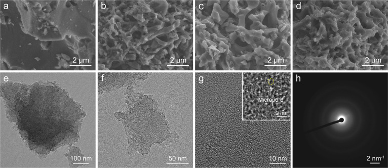
To further examine the internal structure, the AC-MNS-3 microstructure was characterized by transmission electron microscopy (TEM). As shown in Figure e,f, low-magnification TEM images of AC-MNS-3 reveal irregularly shaped carbon fragments. A high-magnification TEM image (Figure g) displays a highly disordered structure with short-range graphitic ordering. In addition, numerous holes smaller than 2 nm in diameter were randomly distributed, indicating micropores. The selected-area electron diffraction (SAED) pattern in Figure h shows diffuse, ring-like features rather than sharp diffraction spots. The broad and diffuse ring associated with the (002) plane of carbon further confirmed that AC-MNS-3 possessed a predominantly amorphous structure with a low degree of graphitization, which is consistent with the XRD patterns and Raman spectra.
Carbon Purity
EDS mapping analysis was used to further verify the purity of the C-MNS and AC-MNS (Figures S2 and S3). C-MNS contained mainly carbon (C) and oxygen (O), with a trace of potassium (K). By contrast, AC-MNS samples had no detectable residual K or any other inorganic compounds (Table S1), indicating that acid washing and neutralization effectively removed residual K-containing species. The ash content was evaluated by thermogravimetric analysis (TGA) over the temperature range of 50–900 °C under airflow (Figure S4). At 30–100 °C, a slight weight loss corresponded to the removal of adsorbed moisture, while the weight remained nearly constant up to 500 °C, indicating good thermal stability. Above 500 °C, a major single-step weight loss occurred because of carbon decomposition, leaving residual weights of <1 wt % at 800 °C. These results confirm that AC-MNS possessed high carbon purity, negligible residual potassium originating from the activation process, and minimal ash content. Such a low ash content is particularly important for electrochemical applications in alkaline electrolytes, as residual inorganic species may dissolve or participate in parasitic reactions, leading to increased internal resistance and degraded cycling stability.
Surface Area and Porosity
The surface area and porosity of C-MNS and AC-MNS samples were evaluated using N2 adsorption–desorption isotherms, as presented in Figure a. All the samples exhibited a type I isotherm, indicating microporosity. Upon KOH activation, N2 uptake substantially increased, particularly at higher KOH contents, indicating a substantially large surface area. The specific surface areas (S BET), determined using the Brunauer–Emmett–Teller (BET) method, of C-MNS, AC-MNS-1, AC-MNS-2, and AC-MNS-3 were 325, 825, 1286, and 1362 m2 g–1, respectively. The pore volume (V total) showed a similar trend, increasing from 0.176 to 0.575 cm3 g–1 (Table ), highlighting the effectiveness of KOH activation in developing porous structures. Nonlocal density functional theory (NLDFT) pore size distribution profiles (Figure b) revealed that all the AC-MNS samples were predominantly microporous, with pore sizes concentrated in the range of 0.5–2.0 nm. AC-MNS-1 exhibited sharp and intense peaks centered at ∼0.8 nm, indicating the dominance of uniform micropores and contributing to a high micropore fraction. By contrast, AC-MNS-2 displayed a broader pore size distribution, with a peak at ∼0.8 nm and an extended tail toward larger pores (∼1.0–1.5 nm). AC-MNS-3 showed a relatively broader pore size distribution, with wider distributions in larger micropores and small-mesopore regions. The NLDFT cumulative pore volume curves of AC-MNS samples are shown in Figure c. AC-MNS-1 exhibited the lowest pore volume, dominated by narrow micropores, while AC-MNS-2 and AC-MNS-3 showed substantially higher pore volumes, with extended distributions toward the larger micropore region. To further elucidate the micropore and mesopore contributions, t-plot analysis was employed to evaluate the micropore surface area (S micro) and volume (V micro). The results confirmed that across all samples, micropores dominated both surface area and pore volume, while mesopores contributed a smaller but increasing fraction, as shown in Figure d and Table . The mesopore contributions to S BET increased with increasing KOH content: 11.6%, 17.4%, and 26.5% for AC-MNS-1, AC-MNS-2, and AC-MNS-3, respectively. The mesopore volume followed a similar trend, rising from 15.2% to 21.0% and 30.1% for AC-MNS-1, AC-MNS-2, and AC-MNS-3, respectively. This progressive mesopore development revealed the effects of increasing the KOH ratio on pore widening and network evolution. By contrast, the micropore area and volume were slightly reduced in AC-MNS-3, indicating that the overall increase in S BET mainly originated from mesopore formation. Collectively, these results revealed that higher KOH contents enhanced the total surface area by widening micropores and generating additional mesopores, thereby improving the hierarchical porosity.
(a) N2 adsorption–desorption isotherms of C-MNS and AC-MNS. (b) NLDFT pore-size distribution and (c) cumulative pore volume curves of AC-MNS. (d) Specific surface areas separated into microporous (S micro) and mesoporous (S meso) contributions, with schematic representations of pore structure development. The increased KOH content promoted mesopore development and substantially larger total surface areas.
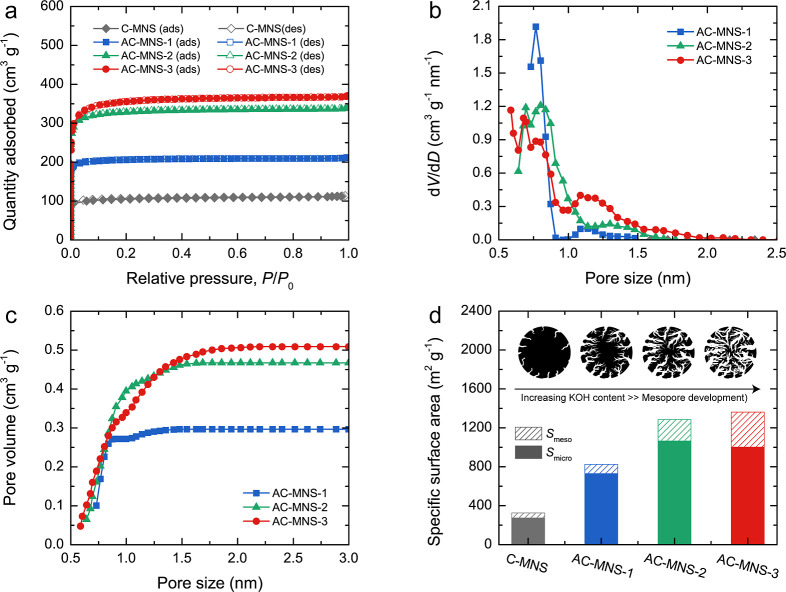
Textural Parameters of the C-MNS and AC-MNS Samples Derived from N2 Adsorption–Desorption Isotherms
| sample | S BET (m2 g–1) | S micro (m2 g–1) | S meso (m2 g–1) | V total (cm3 g–1) | V micro (cm3 g–1) | V meso (cm3 g–1) | S micro /S meso | V micro /V meso |
|---|---|---|---|---|---|---|---|---|
| C-MNS | 325 | 274 (84.3%) | 51 (15.7%) | 0.176 | 0.140 (79.5%) | 0.36 (20.5%) | 5.37 | 3.89 |
| AC-MNS-1 | 825 | 729 (88.4%) | 96 (11.6%) | 0.329 | 0.279 (84.8%) | 0.050 (15.2%) | 7.59 | 5.58 |
| AC-MNS-2 | 1286 | 1062 (82.6%) | 224 (17.4%) | 0.525 | 0.415 (79.0%) | 0.110 (21.0%) | 4.74 | 3.77 |
| AC-MNS-3 | 1362 | 1001 (73.5%) | 361 (26.5%) | 0.575 | 0.402 (69.9%) | 0.173 (30.1%) | 2.77 | 2.32 |
S BET is the specific surface area determined using the BET method.
bS micro is the micropore specific surface area determined using the t-plot method.
cS meso is the specific surface area contributed by mesopores (S meso = S BET – S micro).
dV total is the total pore volume determined at a relative pressure (P/P 0) of 0.998.
eV micro is the micropore volume determined using the t-plot method.
fV meso is the pore volume contributed by mesopores (V meso = V total – V micro).
gValues in parentheses indicate the percentage contributions to the corresponding parameters.
To further elucidate the porosity
development in AC-MNS
driven
by chemical activation reactions between C-MNS and KOH, the etching
and intercalation processes are described and discussed according
to the following reactions
5
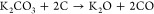 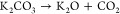 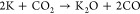 6
6
These reactions begin with the formation of potassium carbonate (K2CO3) at ∼400 °C. As the temperature increases to ∼600 °C, KOH is almost entirely converted to K2CO3. Further heating to ∼700 °C decomposes K2CO3, generating potassium oxide (K2O), accompanied by the evolution of carbon monoxide (CO) and carbon dioxide (CO2). Although traces of these gases are released at lower temperatures, their evolution intensifies above 800 °C, serving as activating agents for physical activation. At higher KOH contents, the activation process becomes more intensified. Initially, KOH promotes micropore formation through chemical etching and intercalation. However, with excess KOH, these micropores widen and coalesce because of intensified etching, gas evolution (CO, CO2, and H2), and the penetration of metallic potassium into the carbon framework. As a result, many of the micropores merge into larger pores and small mesopores, thereby decreasing and increasing micro- and mesopore contributions, respectively. The combination of gas evolution, chemical etching, and intercalation between KOH and the carbon matrix promotes the formation of both micro- and mesopores, producing a hierarchical micromesoporous network with enhanced surface area in the AC-MNS samples. −
Chemical Functionalities
The chemical functionalities in C-MNS and AC-MNS were analyzed by FTIR spectroscopy, as shown in Figure a. The C-MNS spectrum showed weak absorption bands because of substantial degradation of the lignocellulosic framework at high temperatures. The weak absorption bands at 2920 and 2850 cm–1 were attributed to the C–H stretching vibrations of CH3 and CH2 groups, respectively, while bands in the 1500–1400 cm–1 region were assigned to CC stretching vibrations. Upon KOH activation, a broad absorption band at ∼3400 cm–1, corresponding to the O–H stretching vibrations of the hydroxyl group or water molecules adsorbed on the surface, began to emerge. Additionally, a weak absorption band between 1300 and 900 cm–1, associated with the C–O stretching vibrations in ether and hydroxyl groups, appeared. With increasing KOH content, the O–H and C–O absorption bands gradually intensified, consistent with previously reported results. , Notably, the low-intensity absorption bands in the C-MNS and AC-MNS spectra were attributed to the blackbody absorbance of carbon materials.
(a) FTIR, (b) XPS survey, (c) high-resolution XPS C 1s, and (d) high-resolution O 1s spectra and peak deconvolutions for C-MNS, AC-MNS-1, AC-MNS-2, and AC-MNS-3. The inset of (d) shows the corresponding images of the contact angle of water.
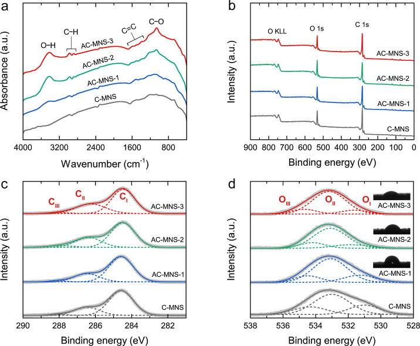
To further elucidate the surface chemical compositions and bonding states, XPS measurement was conducted. The XPS survey spectra exhibited only C 1s and O 1s peaks, confirming the absence of residual activating agents and other impurities (Figure b). The surface chemical compositions (C and O contents) obtained from the quantitative analysis are summarized in Table . The C-MNS contained C and O contents of 81.8 atom % and 18.2 atom %, respectively. Following KOH activation, both the O contents and corresponding O/C ratios of the AC-MNS samples gradually increased with increasing KOH contents, indicating the incorporation of additional oxygen-containing surface groups. The high-resolution C 1s XPS spectra of the C-MNS and AC-MNS samples (Figure c) were deconvoluted into three distinct peaks: CI at 284.5 ± 0.2 eV (C–C/CC bonds), CII at 286.4 ± 0.2 eV (C–O bonds), and CIII at 288.6 ± 0.2 eV (CO bonds). − The CI peak, corresponding to graphitic carbon, weakened with increasing KOH content, indicating increased oxygen-containing surface functional groups during activation. The high-resolution XPS O 1s spectra (Figure d) were deconvoluted into three distinct peaks: OI at 530.6 ± 0.2 eV (CO bonds: carbonyl and quinone), OII at 532.4 ± 0.2 eV (C–O bonds: phenol, ether, and epoxide groups), and OIII at 534.5 ± 0.1 eV (O–CO bonds, carboxylic groups). − Among these peaks, the OII peak (C–O bonds) was the most intense, revealing that C–O bonds were the predominant oxygen-containing functionality on the carbon surface, whereas the OI- and OIII-peak–associated functionalities contributed to a lesser extent (Table ). With increasing KOH content, the OII peak remained the most prominent, whereas the OI and OIII peaks progressively weakened, indicating fewer carbonyl and carboxyl functionalities. This change can be attributed to the chemical reactivity during activation. KOH preferentially reacts with the carboxylic groups rather than hydroxyl groups because of the higher acidity of the former, decreasing the O–CO content with increasing KOH content. Additionally, at elevated temperatures, CO groups were converted to C–OH functionalities via hydrogenation, contributing to the increased number of C–O bonds. , These findings are consistent with the FTIR spectra, revealing the development of C–O absorption bands at higher KOH contents.
Surface Chemical Compositions and the Relative Percentages of Carbon and Oxygen Species of C-MNS, AC-MNS-1, AC-MNS-2, and AC-MNS-3
| relative percentage (%) | |||||||||
|---|---|---|---|---|---|---|---|---|---|
| samples | C (atom %) | O (atom %) | O/C | CI (C–C/CC) | CII (C–O) | CIII (CO) | OI (CO) | OII (C–O) | OIII (O–CO) |
| C–MNS | 81.8 | 18.2 | 0.22 | 73.0 | 24.9 | 2.1 | 22.4 | 57.5 | 20.1 |
| AC-MNS-1 | 81.3 | 18.7 | 0.23 | 67.7 | 24.9 | 7.4 | 18.7 | 67.0 | 14.3 |
| AC-MNS-2 | 79.4 | 20.6 | 0.26 | 66.4 | 28.7 | 4.9 | 13.2 | 71.5 | 15.3 |
| AC-MNS-3 | 78.2 | 21.8 | 0.28 | 64.9 | 32.8 | 2.3 | 10.4 | 76.9 | 12.7 |
Oxygen-containing functional groups directly influenced the surface wettability of the AC-MNS, as clearly confirmed by water contact angle measurements. AC-MNS-1 exhibited a high angle of 83.9° ± 5.2°, whereas AC-MNS-2 and AC-MNS-3 showed substantially lower angles of 58.6° ± 8.4° and 51.0° ± 8.3°, respectively. The reduced contact angle with increasing oxygen content highlights the enhanced hydrophilicity of AC-MNS-2 and AC-MNS-3 relative to that of AC-MNS-1. This finding reveals that oxygen functionalities play important roles in promoting water adsorption and hydrophilicity, as they increase surface polarity and facilitate hydrogen bonding with water molecules. In addition, in the carbon framework, increased mesopore development enhances wettability by facilitating electrolyte infiltration and distribution while promoting the exposure of oxygenated surface groups that further improve interfacial compatibility. , The enhanced wettability of AC-MNS-3 should improve electrolyte accessibility to its porous structure, thereby facilitating ion transport during electrochemical processes and ultimately improving charge storage performance.
Electrochemical Properties (Three-Electrode System)
Electrochemical measurements were conducted using a three-electrode system in 6 M KOH electrolyte within a potential of −1.0–0 V to evaluate the charge storage behavior. The CV profiles of C-MNS and AC-MNS scanned at 50 mV s–1 are shown in Figure a. The CV profile of C-MNS exhibited a distorted CV shape and a low current response, indicating limited capacitance. By contrast, the CV profiles of all the AC-MNS samples displayed a quasi-rectangular feature with no redox reaction, which is characteristic of EDLC behavior. , According to the CV profiles, the current response increased in the following order: AC-MNS-3 > AC-MNS-2 > AC-MNS-1. AC-MNS-3 possessed the highest current response, suggesting its superior capacitive performance. The rate capabilities of the AC-MNS samples were further assessed by varying the scan rates from 10 to 100 mV s–1 (Figures b and S5). Across all the scan rates, the CV profiles retained their quasi-rectangular shape with minimal distortion, indicating excellent ion-transport kinetics and low internal resistance. The GCD profiles at a current density of 1 A g–1 for all the samples are shown in Figure c. C-MNS showed a nonlinear triangular GCD profile, indicating poor charging and discharging. In contrast, the GCD profiles of the AC-MNS samples exhibited nearly symmetric, linear-triangular shapes, further confirming their EDLC behavior. Among them, AC-MNS-3 delivered the longest discharge time, in line with the current response determined from the CV profiles. For all the samples, further increasing current density from 1 to 20 A g–1 shortened the charge–discharge time (Figures d and S6). Even at high current densities, the GCD profiles of AC-MNS retained a nearly linear-triangular shape with negligible IR drops (Figure S7), indicating minimal internal resistance. The specific capacitance (C s) values, calculated from the GCD profiles, were 6, 153, 158, and 170 F g–1 for C-MNS, AC-MNS-1, AC-MNS-2, and AC-MNS-3, respectively, with an estimated error of ∼3–5%. With increasing current density from 1 to 20 A g–1, the C s values of all the samples decreased because of insufficient time for electrolyte ions to fully access internal pores at high charge–discharge rates, thereby reducing the charge storage efficiency. At 20 A g–1, the capacitance retentions, relative to the corresponding values at 1 A g–1 were ∼25% and ∼77% for C-MNS and all the AC-MNS samples, respectively. No significant difference in capacitance retention was observed among AC-MNS-1, AC-MNS-2, and AC-MNS-3.
Electrochemical properties of C-MNS and AC-MNS measured using a three-electrode system in 6 M KOH electrolyte. (a) Comparison of CV profiles scanned at 50 mV s–1 for C-MNS and AC-MNS. (b) CV profiles scanned at various rates from 10 to 100 mV s–1 for AC-MNS-3. (c) Comparison of GCD profiles at 1 A g–1 for C-MNS and AC-MNS. (d) GCD profiles at various current densities from 1 to 10 A g–1 for AC-MNS-3. (e) Specific capacitance (C s) of C-MNS and AC-MNS plotted as a function of current density. The error bar was obtained by repeating the measurements three times. (f) Summary of the relationship between the specific capacitance (C s) and specific surface area (S BET) for AC-MNS-3 in this work and other biomass-derived ACs in the literature. −
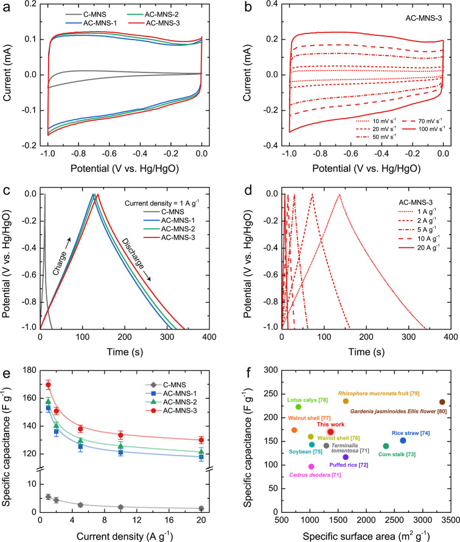
EIS measurements were conducted to further elucidate the impedance behavior of the AC-MNS electrodes, with the corresponding Nyquist plots shown in Figure S8. The high-frequency intercepts indicate solution resistances (R s) of 6.07, 8.89, and 6.75 Ω for AC-MNS-1, AC-MNS-2, and AC-MNS-3, respectively, while the depressed semicircles in the midfrequency region correspond to charge-transfer resistance (R ct) values in the range of 0.83–1.87 Ω (Table S2). In the low-frequency region, all samples exhibited nearly vertical lines with slight deviations, indicating dominant EDLC behavior with minor diffusion effect, which is commonly observed for porous carbon electrodes. Although AC-MNS-1 exhibited the lowest overall impedance, it delivered the lowest capacitance among the samples. This apparent discrepancy highlights that electrochemical performance is not solely governed by resistance but is strongly dependent on pore accessibility and surface chemistry. AC-MNS-1 was dominated by narrow micropores with limited pore widening and a relatively low concentration of oxygen-containing functional groups. While such a structure minimizes internal resistance and enables rapid ion transport along accessible surfaces, it restricts electrolyte penetration into the internal pore network. Consequently, a significant portion of the available surface area remains electrochemically inaccessible, resulting in limited effective charge storage despite low impedance. In contrast, AC-MNS-2 and AC-MNS-3 exhibited moderately higher impedance, likely due to increased structural disorder induced by more intensive KOH activation, which increases ion-transport tortuosity. However, this activation also promotes pore widening and the development of interconnected mesopores, significantly enhancing pore connectivity and electrolyte accessibility. In particular, AC-MNS-3 showed a reduced relative contribution from narrow micropores but achieved the highest capacitance, clearly demonstrating that accessible surface area and hierarchical pore architecture, rather than absolute microporosity, govern electrochemical performance. The interconnected mesopores act as ion-buffering pathways and transport channels, facilitating efficient ion diffusion toward adjacent micropores and improving utilization of the available surface area. − Moreover, the increased oxygen-containing functional groups in AC-MNS-3 enhance surface wettability, further promoting electrolyte infiltration and ion mobility throughout the porous carbon network. Although these structural features introduce moderately higher impedance, their positive effect on pore accessibility and ion transport outweighs the resistance increase, leading to superior capacitance performance. Notably, the slightly lower R s of AC-MNS-3 compared with AC-MNS-2 can be attributed to its more developed mesoporosity and improved wettability, which partially compensate for increased tortuosity.
Overall, these results emphasize that low impedance alone does not guarantee high capacitance. Instead, optimal electrochemical performance arises from a balance between pore connectivity, accessible surface area, and surface wettability. The superior performance of AC-MNS-3 therefore originates from its hierarchical micro–mesoporous structure and favorable surface chemistry, which collectively maximize electrolyte accessibility and effective charge storage.
The C s value achieved by AC-MNS-3 in our work (170 F g–1) was either superior or comparable to those of other biomass-derived ACs reported in the literature (Table ), highlighting its potential as an alternative electrode material for supercapacitor applications. A plot of C s versus S BET for AC-MNS-3 and other biomass-derived ACs − is shown in Figure f. The performance of AC-MNS-3 is competitively positioned, showing a high C s value relative to its surface area. Notably, several reported ACs possessing higher S BET values delivered comparable or even lower C s values, likely because of excessive microporosity and poorly interconnected pore networks, which hinder electrolyte ion accessibility. − These observations highlight that, rather than the absolute S BET value, the accessible surface area and pore connectivity are critical factors in optimizing electrochemical properties. The results suggest that the hierarchical pore network of AC-MNS-3 was highly electrochemically accessible, effectively utilizing the available surface for charge storage.
Comparison of the Specific Capacitance (C s) of AC-MNS-3 Obtained in This Work, as Measured Using a Three-Electrode System in a 6 M KOH Electrolyte at 1 A g–1, with Those of Biomass-Derived ACs in the Literature
| Biomass | activating agent | activation temperature (°C) | S BET (m2 g–1) | potential window (V) | current density (A g–1) | C s (F g–1) | C s /S BET (F m–2) | rate capability (%) | refs. |
|---|---|---|---|---|---|---|---|---|---|
| Cedrus deodara | H3PO4 | 400 | 1024 | 1.2 | 1 | 97 | 0.095 | 69 (20 A g–1) | |
| Terminalia tomentosa | H3PO4 | 400 | 1291 | 1.2 | 1 | 141 | 0.109 | 42 (20 A g–1) | |
| puffed rice | KOH | 800 | 1635 | 1.0 | 1 | 117 | 0.072 | 85 (10 A g–1) | |
| corn stalk | KOH | 700 | 2349 | 1.0 | 1 | 140 | 0.060 | 77 (5 A g–1) | |
| rice straw | KOH | 850 | 2651 | 1.0 | 1 | 152 | 0.057 | 78 (15 A g–1) | |
| soybean | KOH | 850 | 1034 | 1.0 | 1 | 143 | 0.138 | 75 (20 A g–1) | |
| walnut shell | KOH | 650 | 1016 | 1.0 | 1 | 160 | 0.157 | 90 (3 A g–1) | |
| walnut shell | KOH | 600 | 724 | 1.0 | 1 | 174 | 0.240 | 88 (3 A g–1) | |
| lotus calyx | KOH | 750 | 798 | 1.0 | 1 | 223 | 0.279 | 71 (20 A g–1) | |
| Rhizophora mucronata fruit | KOH | 900 | 3347 | 1.0 | 1 | 233 | 0.070 | 64 (20 A g–1) | |
| Gardenia jasminoides Ellis flower | KOH | 800 | 1637 | 1.0 | 1 | 235 | 0.144 | 74 (20 A g–1) | |
| macadamia shell | KOH | 800 | 1362 | 1.0 | 1 | 170 | 0.125 | 77 (20 A g–1) | this work |
Charge Storage Mechanism and Capacitance Contributions
To elucidate the charge storage mechanisms and distinguish the relative contributions of the EDLC and PC, the current responses obtained from the CV profiles scanned at different rates were analyzed using the power-law relationship, Trasatti’s method, and Dunn’s method. The detailed methodology of these approaches is provided in the Supporting Information. According to the power law (I = av b ), the logarithmic plots between the currents and scan rates of all the samples (Figure S9) yield slopes corresponding to b values. A b value of 1 indicates a surface-controlled process (EDLC), whereas b value of 0.5 indicates a diffusion-controlled process (PC). As shown in Figure a, the AC-MNS samples exhibited b values approaching 1 (∼0.98), indicating that charge storage is largely governed by EDLC mechanisms, with a minor PC contribution. In contrast, C-MNS possessed lower b values (0.51–0.78), suggesting a greater PC contribution.
(a) Plot of b values, determined from the power-law relationship, versus potential. (b) Histograms comparing the percentage capacitance contributions from EDLC and PC determined using Trasatti’s method. (c) The CV profiles scanned at 50 mV s–1 for AC-MNS-3, with deconvoluted EDLC and PC contributions determined using Dunn’s method. (d) Histogram showing the proportions of EDLC and PC contributions versus the scan rate for AC-MNS-3. The shaded and hatched regions represent the contributions from EDLC and PC processes, respectively.
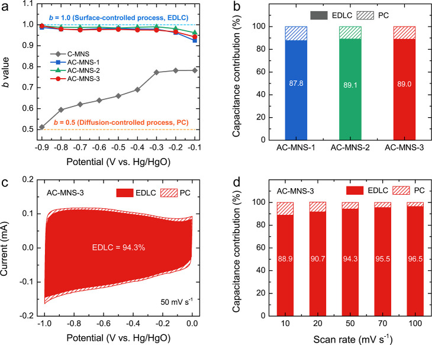
Trasatti’s method further supported these findings, revealing that AC-MNS samples were dominated by the EDLC effect, which contributed 87–89% of the total capacitance, with only 11%–13% arising from the PC effect (Figures b and S11). Dunn’s method complementarily and quantitatively separated the current response into the EDLC and PC contributions at different scan rates (Figure S12). At 50 mV s–1, the shaded regions of the CV profiles (Figures c and S13) clearly demonstrated the dominant EDLC contribution. As shown in Figures d and S13, all the AC-MNS samples exhibited high EDLC contributions, with minor PC contributions, even at low scan rates, which further increased with increasing scan rates. The PC contributions among the AC-MNS samples showed minor variation, with values of 4.1%–12.6% for AC-MNS-1, 2.1%–6.9% for AC-MNS-2, and 3.5%–11.1% for AC-MNS-3. This variation is in good agreement with the trend revealed by the Trasatti analysis.
Although the AC-MNS samples contained high levels of oxygen-containing functional groups, the Faradaic redox reactions in alkaline aqueous electrolytes are primarily associated with carboxylic groups through their interaction with hydroxyl ions (OH–), while other oxygen functionalities, such as phenolic or quinone-like groups, contribute only weakly or indirectly to the overall electrochemical. , However, the variation in the PC contribution was not only correlated with the carboxyl group concentration but also influenced by both the surface wettability and pore architecture. For the AC-MNS-2 electrode, the lowest PC contribution can be attributed to its well-developed mesopores, which serve as ion-buffering pathways that facilitate electrolyte diffusion into micropores, thereby enhancing EDLC dominance. In contrast, the slightly increased PC contribution for AC-MNS-3 arises from the combined effects of additional mesopore formation and enhanced surface wettability, exposing more carboxylic groups while providing sufficient space for ion diffusion during redox reactions. Therefore, the hierarchical micro–mesoporous structure of AC-MNS, together with oxygenated functional groups, synergistically balances both EDLC and PC contributions, optimizing the electrochemical properties.
Symmetric Coin-Cell Supercapacitor (Two-Electrode System)
To evaluate the applicability of AC-MNS-3 as an electrode material for practical supercapacitor devices, a symmetric coin-cell configuration was assembled in a two-electrode system. As shown in Figure a, the CV profiles scanned from 10 to 100 mV s–1 exhibited a quasi-rectangular shape without any redox peaks, confirming the predominant EDLC behavior. To prevent water decomposition and minimize the risk of gas evolution within the coin cell, the operating potential window was limited to 1.0 V. At high scan rates, negligible distortion indicates excellent rate capability and capacitive performance, suggesting efficient ion transport and low internal resistance within the electrode material. The GCD profiles recorded at current densities ranging from 0.1 to 5 A g–1 displayed a symmetric and linear-triangular shape (Figure b), further confirming the ideal capacitive behavior and a high degree of reversibility of charging and discharging. At higher current densities, a small IR drop became more evident, as shown in Figure c. The ESR of the supercapacitor was determined using the relation: ESR = ΔV/2I, where ΔV represents the IR drop. The calculated ESR was as low as 0.31 Ω, indicating very low internal and diffusion resistances. Such a low ESR contributes to the high power performance of the supercapacitor and minimizes energy loss as heat during electrochemical charging and discharging. The Nyquist plot of the coin-cell supercapacitor displayed a small high-frequency intercept (R s), a modestly depressed semicircle, and an almost vertical low-frequency rise (Figure d). The limited arc diameter indicated low R ct, consistent with efficient ion access to the carbon pore network, while the near-vertical tail confirmed the ideal EDLC-dominant behavior, with only minor diffusion limitations. From the fitting with the equivalent circuit, R s and R ct were 0.24 and 0.08 Ω, respectively (Table S4). The combination of low R s and R ct values indicated minimal ohmic and interfacial losses in the coin-cell configuration.
Electrochemical properties measured for a symmetric coin-cell supercapacitor device (two-electrode system) fabricated using AC-MNS-3 as the active electrode material: (a) CV profiles scanned at various rates from 5 to 100 mV s–1. (b) GCD profiles at various current densities from 0.1 to 5 A g–1. (c) GCD profile magnified at the initial discharge region showing the IR drop at 5 A g–1. (d) Nyquist plot and its equivalent circuit. The inset shows the Nyquist plot in the high-frequency region.
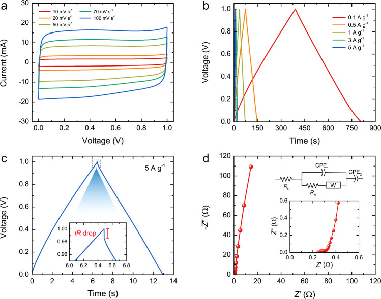
The C s values of the device, calculated from the GCD profiles, are plotted against the current density in Figure a. The C s values gradually decreased with increasing current density because of insufficient ion diffusion at high rates. Notably, the device maintained the C s value of 32.0 F g–1 at 5 A g–1, retaining ∼82% of the initial value at 0.1 A g–1 (38.7 F g–1), indicating reasonable rate capability. To enable practical benchmarking, the results were normalized to both electrode area and electrode volume. At 0.1 A g–1, the device delivered areal and volumetric capacitances of 46.2 mF cm–2 and 15.4 F cm–3, which decreased to 38.2 mF cm–2 and 12.7 F cm–3, respectively, at 5 A g–1 (Table ). The inset of Figure a shows a green light-emitting diode (LED) powered by two coin-cell supercapacitors, confirming the practical applicability of the device. A Ragone plot showing the energy and power densities of the device compared with those of other biomass-derived and commercial ACs is presented in Figure b. − The energy density ranged from 4.5 to 5.4 W h kg–1, while the corresponding power density spanned from 50 to 2500 W kg–1. These results position AC-MNS-3 as competitive among biomass-derived AC electrodes, underscoring its potential for energy storage applications. Furthermore, cycling stability evaluated over 10,000 charge–discharge cycles at 3 A g–1 demonstrated minimal change in capacitance (Figure c), indicating excellent long-term electrochemical stability. The inset shows the first and last five GCD cycles, which maintained consistent profiles with negligible fading. The CV profile after 10,000 cycles showed negligible distortion compared to the initial profile (Figure S14). Self-discharge is another important parameter that determines the practical applicability and reliability of supercapacitor devices, as it directly affects their ability to retain stored energy over time. Figure d shows the open-circuit voltage decay of the coin-cell supercapacitor measured over 24 h after being charged to 1.0 V. The cell voltage gradually decreased over time. After 24 h, the final retained voltage was ∼28% of the initial charged voltage. These results revealed that the coin-cell supercapacitor exhibited excellent stability and low self-discharge in practical operation. Overall, the electrochemical characterization confirmed that AC-MNS-3 exhibited favorable capacitive behavior, competitive high energy and power densities, and exceptional cycle life. These attributes make AC-MNS-3 a promising candidate for sustainable and high-performance supercapacitor applications, particularly those based on biomass-derived carbon materials.
(a) Specific capacitance versus current density (the inset shows a green LED powered by two coin-cell supercapacitors), (b) Ragone plot (energy density versus power density) for the coin-cell supercapacitor in this work and those fabricated using biomass-derived AC-based electrodes, as reported in the literature. − Note that the error bars are smaller than the symbol size and are thus invisible. (c) Capacitance retention over 10,000 cycles at 3 A g–1, and (d) self-discharge of the coin-cell supercapacitor.
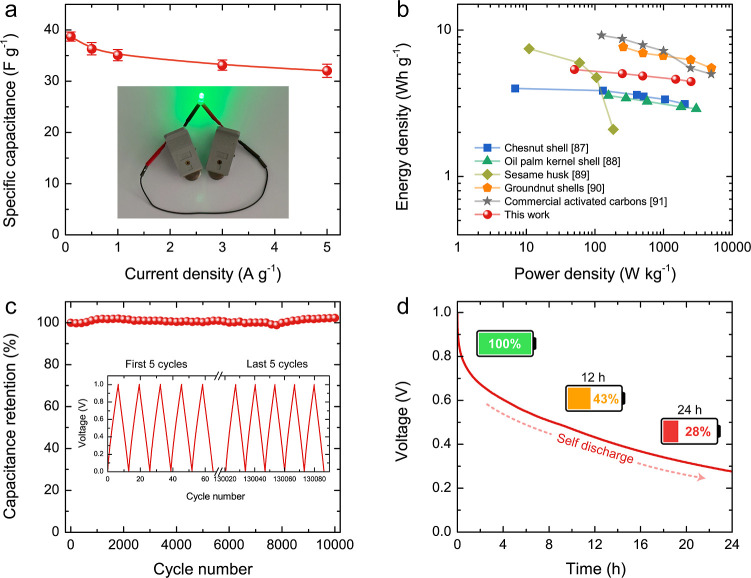
Specific Capacitance, Areal Capacitance, and Volumetric Capacitance of Coin-Cell Supercapacitor at Different Current Densities from 0.1 to 5 A g–1
| current density (A g–1) | specific capacitance (F g–1) | areal capacitance (mF cm–2) | volumetric capacitance (F cm–3) |
|---|---|---|---|
| 0.1 | 38.7 | 46.2 | 15.4 |
| 0.5 | 36.3 | 43.4 | 14.5 |
| 1 | 35.1 | 41.9 | 14.0 |
| 3 | 33.2 | 39.6 | 13.2 |
| 5 | 32.0 | 38.2 | 12.7 |